library(tidyverse)
library(tidymodels)
library(hoopR)
game_data <- load_nba_team_box(seasons = 2023) |>
mutate(result = factor(if_else(team_winner, "W", "L"), levels = c("W", "L")),
largest_lead = as.numeric(largest_lead),
fast_break_points = as.numeric(fast_break_points),
points_in_paint = as.numeric(points_in_paint),
is_home = if_else(team_home_away=="home", 1, 0)
) |>
select(result, is_home, team_score, assists, blocks,
defensive_rebounds,fast_break_points, field_goal_pct,
flagrant_fouls, fouls,
free_throw_pct, largest_lead,
offensive_rebounds, points_in_paint, steals,
team_turnovers, technical_fouls,
three_point_field_goal_pct)
set.seed(1004)
split <- initial_split(game_data, prop = 0.8, strata = result)
train_data <- training(split)
test_data <- testing(split)10 Random Forests
“Talent is God given. Be humble. Fame is man-given. Be grateful. Conceit is self-given. Be careful.” - John Wooden
10.1 Introduction to Decision Trees
A decision tree is a powerful supervised learning algorithm widely used in sports analytics for both classification and regression problems. A decision tree partitions the data into subsets based on simple decision rules inferred from the predictor variables. It constructs a flowchart-like structure, where each internal node represents a condition on a predictor variable, branches represent outcomes of those conditions, and leaf nodes represent predictions or classifications.
Decision trees provide intuitive interpretations, making them particularly appealing for sports analysts who value explainability alongside predictive accuracy.
10.1.1 Why Decision Trees in Sports Analytics?
Decision trees are particularly useful for:
- Predicting categorical outcomes, such as win/loss scenarios in matches.
- Forecasting continuous performance measures, like points scored or yards gained.
- Identifying key variables that influence performance outcomes.
10.1.2 Example: Predicting NBA Game Wins
Consider data from the hoopR library, which provides comprehensive basketball statistics. Suppose we aim to predict whether a player successfully makes a free throw based on game context and player characteristics.
Using the tidymodels framework, we first prepare and split our dataset:
Next, we define and fit a simple decision tree model using parsnip. Let’s just use one predictor: team_score.
tree_spec <- decision_tree() |>
set_mode("classification") |>
set_engine("rpart")
tree_fit <- tree_spec |>
fit(result ~ team_score, data = train_data)
tree_fit parsnip model object
n= 2104
node), split, n, loss, yval, (yprob)
* denotes terminal node
1) root 2104 1052 W (0.5000000 0.5000000)
2) team_score>=111.5 1243 392 W (0.6846340 0.3153660) *
3) team_score< 111.5 861 201 L (0.2334495 0.7665505) *We visualize the fitted tree to interpret decisions clearly:
library(rpart.plot)
rpart.plot(tree_fit$fit, extra=104)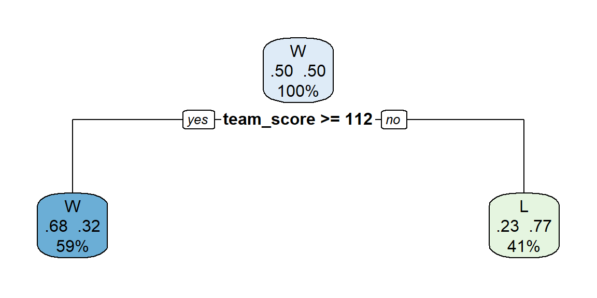
10.1.3 How Decision Trees Make Splits
Decision trees grow by repeatedly splitting data into two or more homogenous subsets based on the predictor variables. To illustrate the concept, consider our simplified basketball example, where we predict game outcome (result: Win or Loss) based solely on team_score.
The splitting procedure involves three fundamental steps:
- Considering Potential Splits:
The algorithm examines each possible split point within the predictor variable (in this case, team_score) to separate the observations into two subsets.
- Evaluating Split Quality (Purity):
For classification trees, the goal is to maximize purity within resulting groups—ideally, each subset would contain observations predominantly from one category (either mostly wins or mostly losses). A commonly used measure of purity is the Gini index, defined as:
\[ \text{Gini index} = 1 - \sum_{i=1}^{k} p_i^2 \]
where \(p_i\) is the proportion of observations in category \(i\), and \(k\) is the number of classes (here, \(k=2\): Win or Loss). Lower Gini index values indicate higher purity and thus better splits.
- Choosing the Best Split:
The algorithm chooses the split point that minimizes impurity (or equivalently, maximizes purity). In the basketball data, the algorithm found that splitting at a certain team score (for example, 112 points) best separated winning games from losing ones. Games with scores above this cutoff mostly resulted in wins, while those below mostly ended in losses.
These steps repeat recursively, with each resulting subset further split until stopping conditions (such as minimum node size or improvement thresholds) are met. The final leaves represent predicted classes based on majority votes of training observations within each leaf.
The visualization from rpart.plot() neatly illustrates this process. The top node indicates the overall dataset, split at the selected threshold (team_score). Subsequent branches represent outcomes based on this split, clearly showing how higher team scores are associated with wins.
Decision trees thus provide clear, interpretable decision rules directly linked to your data, helping sports analysts easily communicate insights from predictive models.
10.1.4 Example with more predictors
Let’s return to our example and include two more predictors: `
tree_spec <- decision_tree() |>
set_mode("classification") |>
set_engine("rpart")
tree_fit <- tree_spec |>
fit(result ~ team_score + field_goal_pct + defensive_rebounds, data = train_data)rpart.plot(tree_fit$fit, extra = 104)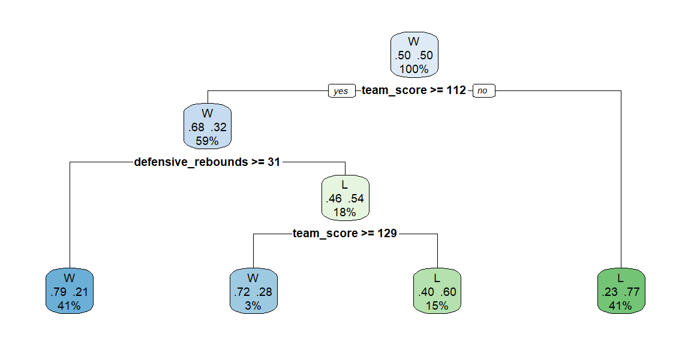
We can evaluate the fit of this tree by examining accuracy and the confusion matrix as we did in logistic regression. In the case of binary categories, such as in our example, we can also do a ROC curve.
probs = tree_fit |> predict(train_data, type="prob")
preds = tree_fit |> predict(train_data) |>
bind_cols(probs, train_data)
accuracy(preds, truth = result, estimate=.pred_class)# A tibble: 1 × 3
.metric .estimator .estimate
<chr> <chr> <dbl>
1 accuracy binary 0.747conf_mat(preds, truth = result, estimate=.pred_class) Truth
Prediction W L
W 723 203
L 329 849preds |>
roc_curve(truth = result, .pred_W) |>
autoplot()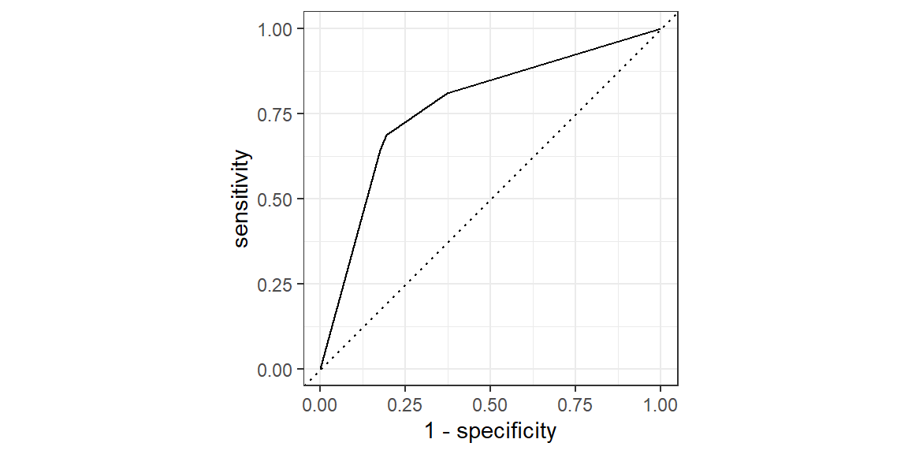
preds |> roc_auc(truth = result, .pred_W)# A tibble: 1 × 3
.metric .estimator .estimate
<chr> <chr> <dbl>
1 roc_auc binary 0.770Now, we will check the test data:
probs_test = tree_fit |> predict(test_data, type="prob")
preds_test = tree_fit |> predict(test_data) |>
bind_cols(probs_test, test_data)
accuracy(preds_test, truth = result, estimate=.pred_class)# A tibble: 1 × 3
.metric .estimator .estimate
<chr> <chr> <dbl>
1 accuracy binary 0.692conf_mat(preds_test, truth = result, estimate=.pred_class) Truth
Prediction W L
W 163 62
L 100 201preds_test |>
roc_curve(truth = result, .pred_W) |>
autoplot()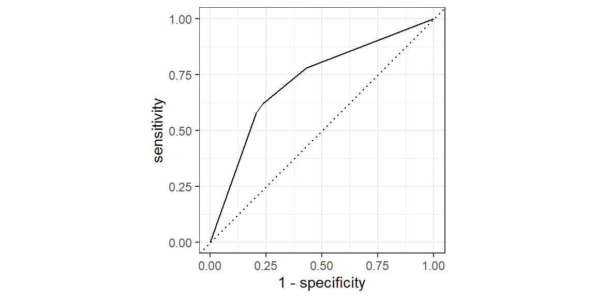
preds_test |> roc_auc(truth = result, .pred_W)# A tibble: 1 × 3
.metric .estimator .estimate
<chr> <chr> <dbl>
1 roc_auc binary 0.721Note that both the accuracy and AUC are lower by about 0.05 for the test data than they were for the train data. This indicates some overfitting in the decision tree.
10.1.5 Decision Tree Hyperparameters
The two hyperparameters in a decision tree are
- ’tree_depth`: the maximum depth of the tree
- ‘min_n’: the minimum number of data points in a node that are required for the node to be split further.
As we have done in the past, we will tune these hyperparameters. Let’s do so with our example and include all 17 possible features (predictor variables).
tree_model <- decision_tree(tree_depth = tune(),
min_n = tune()) |>
set_mode("classification") |>
set_engine("rpart")
#setup tuning grid
tuning_grid = grid_regular(
tree_depth(range=c(1,10)),
min_n(range=c(2, 30)),
levels = 10
)
#setup cross validation
dat_folds = vfold_cv(train_data, v = 5, strata = result)
#tune the model
tree_results = tune_grid(
tree_model,
result~.,
resamples = dat_folds,
grid = tuning_grid,
metrics = metric_set(accuracy)
)
best_params <- select_best(tree_results, metric="accuracy")
best_params# A tibble: 1 × 3
tree_depth min_n .config
<int> <int> <chr>
1 4 2 Preprocessor1_Model004tree_spec <- decision_tree(tree_depth = best_params$tree_depth,
min_n = best_params$min_n) |>
set_mode("classification") |>
set_engine("rpart")
tree_fit <- tree_spec |>
fit(result ~ ., data = train_data)
rpart.plot(tree_fit$fit, extra = 104)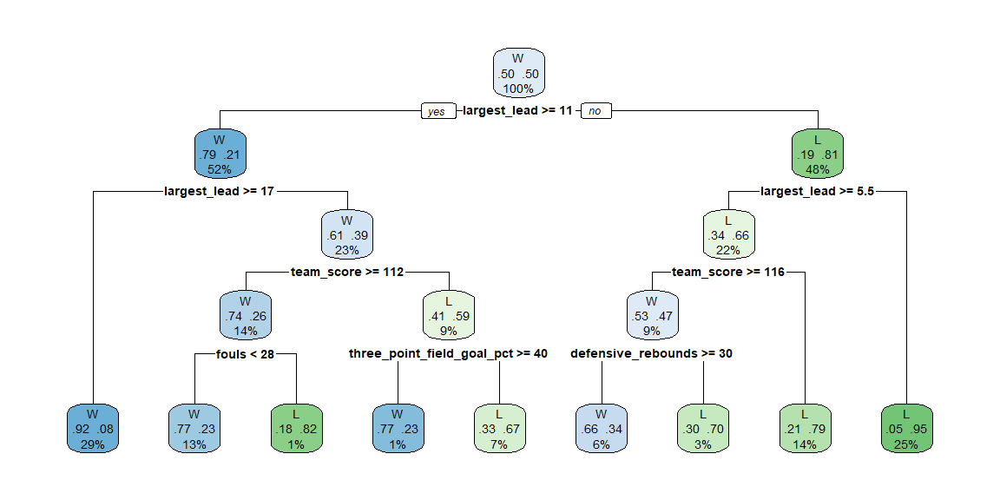
probs = tree_fit |> predict(train_data, type="prob")
preds = tree_fit |> predict(train_data) |>
bind_cols(probs, train_data)
accuracy(preds, truth = result, estimate=.pred_class)# A tibble: 1 × 3
.metric .estimator .estimate
<chr> <chr> <dbl>
1 accuracy binary 0.846conf_mat(preds, truth = result, estimate=.pred_class) Truth
Prediction W L
W 888 159
L 164 893preds |>
roc_curve(truth = result, .pred_W) |>
autoplot()preds |> roc_auc(truth = result, .pred_W)# A tibble: 1 × 3
.metric .estimator .estimate
<chr> <chr> <dbl>
1 roc_auc binary 0.899Checking the test data:
probs_test = tree_fit |> predict(test_data, type="prob")
preds_test = tree_fit |> predict(test_data) |>
bind_cols(probs_test, test_data)
accuracy(preds_test, truth = result, estimate=.pred_class)# A tibble: 1 × 3
.metric .estimator .estimate
<chr> <chr> <dbl>
1 accuracy binary 0.772conf_mat(preds_test, truth = result, estimate=.pred_class) Truth
Prediction W L
W 194 51
L 69 212preds_test |>
roc_curve(truth = result, .pred_W) |>
autoplot()preds_test |> roc_auc(truth = result, .pred_W)# A tibble: 1 × 3
.metric .estimator .estimate
<chr> <chr> <dbl>
1 roc_auc binary 0.84810.2 Ensemble Learning: Concept and Motivation
While individual decision trees are intuitive and interpretable, they can be prone to high variance—small changes in training data can lead to significant differences in predictions. Ensemble learning methods mitigate this limitation by combining multiple predictive models to achieve better stability and predictive performance.
10.2.1 Bias-Variance Trade-off
The bias-variance trade-off is a fundamental concept in machine learning that describes the tension between the error introduced by the model’s assumptions about the underlying data structure (bias) and the error introduced by sensitivity to fluctuations in the training set (variance). Understanding this trade-off is crucial for developing models that generalize well to unseen data.
Bias
Bias refers to the error due to overly simplistic assumptions in the learning algorithm. High bias can cause the model to miss relevant relations between features and target outputs (underfitting), leading to poor performance on both the training and test data.
Variance
Variance refers to the error due to too much complexity in the learning algorithm. High variance can cause the model to model the random noise in the training data (overfitting), leading to poor generalization to new data.
Trade-off
Ideally, one wants to choose a model that both accurately captures the regularities in its training data and generalizes well to unseen data. However, in practice, there is often a tradeoff between bias and variance. Increasing a model’s complexity will typically decrease bias but increase variance. Conversely, reducing a model’s complexity increases its bias but decreases its variance. The goal is to find the right balance between bias and variance, minimizing the total error.
Example
Let’s illustrate the bias-variance trade-off with a simple example in R. We will use polynomial regression to fit a model to synthetic data. This example demonstrates how increasing the polynomial degree (model complexity) affects the bias and variance of the model predictions.
First, we’ll generate some synthetic data that follows a sine curve with some added noise:
set.seed(42)
x <- seq(0, 2*pi, length.out=50)
y <- sin(x) + rnorm(50, sd=0.2)
dat = data_frame(x, y)
dat |> ggplot(aes(x=x, y=y)) +
geom_point() +
ggtitle("Synthetic Sine Data with Noise")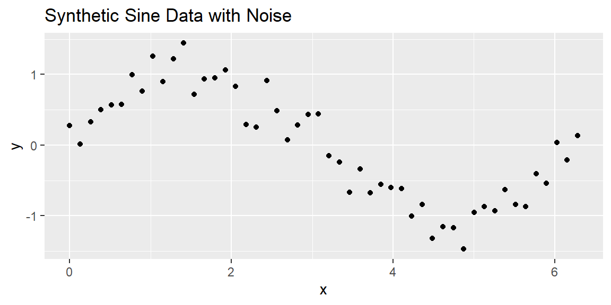
Next, we’ll fit polynomial regression models of varying degrees to this data and visualize how model complexity influences the fit:
# Function to fit and predict using polynomial regression
newdat = data_frame(x=seq(0, 2*pi, length.out=100))
predict_poly <- function(degree) {
model <- lm(y ~ poly(x, degree,
raw=TRUE), data = dat)
return(predict(model, newdat))
}
newdat = bind_cols(newdat,
deg1 = predict_poly(1),
deg3 = predict_poly(3),
deg10 = predict_poly(10),
)
# Plotting the data and models of different degrees
dat |> ggplot(aes(x=x, y=y)) +
geom_point() +
geom_line(data = newdat, aes(x=x, y=deg1), color='blue') +
geom_line(data = newdat, aes(x=x, y=deg3), color='red') +
geom_line(data = newdat, aes(x=x, y=deg10), color='black') +
labs(title="Polynomial Regression with Different Degrees", x="X", y="Y") +
scale_color_manual(values=c("blue", "red", "black")) +
theme_minimal()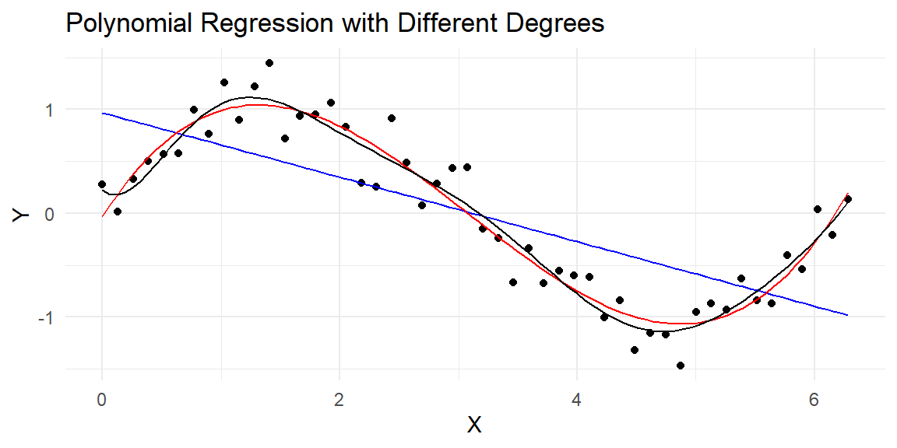
In this example:
- A low-degree polynomial (blue line) may not capture the underlying trend well, exhibiting high bias and low variance.
- A moderate-degree polynomial (red line) might strike a good balance, capturing the underlying trend while not being too sensitive to the noise in the data.
- A high-degree polynomial (black line) might fit the training data very closely, capturing the noise as if it were a signal, thus exhibiting low bias but high variance.
By adjusting the complexity of the model (in this case, the degree of the polynomial), we can observe the impact on bias and variance, illustrating the bias-variance trade-off. The key in practice is to find the complexity level that minimizes the total error on unseen data.
10.2.2 Voting Classifiers
Imagine you’ve developed several classifiers, each achieving an accuracy of around 80%. A straightforward strategy to enhance classification performance is to combine the predictions from each of these classifiers and select the class that receives the most votes. This method, known as a hard voting classifier, can lead to a composite classifier that outperforms even the most accurate member of the ensemble.
Surprisingly, a voting classifier can achieve higher precision than any individual classifier in the group. This improvement in accuracy occurs even if each classifier performs only marginally better than chance. With a large and diverse set of such weak learners, the ensemble can become a strong learner, capable of high accuracy. How does this phenomenon occur? Consider the following analogy for clarity.
Imagine a coin that is slightly biased, with a 51% chance of landing heads and a 49% chance of landing tails. If you flip this coin 1,000 times, you’re likely to observe around 510 heads and 490 tails, leading to a majority of heads. Calculations reveal that the likelihood of seeing more heads than tails after 1,000 flips is about 75%. This probability increases with the number of flips, exceeding 97% after 10,000 flips. This outcome is a result of the law of large numbers, which posits that as the number of flips increases, the proportion of heads approaches the true likelihood of a head flip (51%).
We can visualize this by simulating a slightly biased coin in R.
n = 20000
set.seed(1004)
flips = rbinom(n, 1, .51)
ratio_heads = cummean(flips)
dat = tibble(flip = 1:n, ratio_heads, sim = 1)
for(i in 2:20){
flips = rbinom(n, 1, .51)
ratio_heads = cummean(flips)
dat = bind_rows(dat, tibble(flip = 1:n, ratio_heads, sim = i))
}
dat |>
ggplot(aes(x = flip, y = ratio_heads, group = sim))+
geom_line(col = "gray")+
ylim(.4, .6)+
geom_hline(yintercept = .5)+
geom_hline(yintercept = .51, lty = 2)+
ylab("Proportion of Heads")+
xlab("Number of Flips")+
ggtitle("20 Simulated series of flipping a biased coin 20,000 times")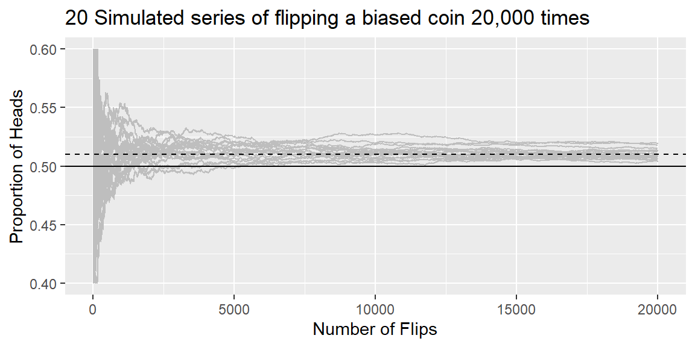
Applying this principle to ensemble learning, consider an ensemble of 1,000 classifiers, each with a 51% chance of making the correct prediction (just above random chance). By aggregating their predictions and choosing the class with the majority vote, you might expect accuracy rates as high as 75%. This scenario assumes, however, that all classifiers make independent errors, an idealization not often met since the classifiers are trained on the same data and may make similar mistakes. Consequently, the likelihood of incorrect majority votes increases, potentially lowering the ensemble’s overall accuracy.
Soft Voting
When your classifiers are capable of estimating class probabilities you can leverage a technique known as soft voting. Soft voting calculates the class with the highest average probability across all classifiers, potentially leading to more accurate ensemble predictions. This method can outperform hard voting because it assigns greater influence to predictions made with high confidence.
10.2.3 Baggin and Pasting
Achieving a diverse collection of classifiers can be accomplished in two primary ways: employing a variety of training algorithms or using a single algorithm but training it on distinct random subsets of the training data. The latter approach manifests in two techniques: bagging and pasting, based on how samples are drawn from the training set.
Bagging—short for bootstrap aggregating—involves drawing random subsets of the training set with replacement. That means the same training instance can appear multiple times in the same subset.
Pasting, on the other hand, draws subsets without replacement, ensuring that training instances don’t repeat within a subset.
The essence of both bagging and pasting is to permit each model in the ensemble to learn from a slightly different perspective of the data, thereby introducing diversity. While bagging allows the same data point to be used multiple times by the same predictor, pasting does not.
Once training is complete, the ensemble predicts new instances by aggregating the outcomes of all models. For classification tasks, this aggregation typically involves selecting the most common prediction (analogous to a hard voting classifier), whereas for regression tasks, the average prediction is used. Although each model may exhibit higher bias when trained on a subset of the training data, the aggregation process tends to decrease both bias and variance. The result is an ensemble that generally retains a similar bias but exhibits a lower variance compared to a model trained on the entire training set.
A significant advantage of bagging and pasting is their scalability. Since each model can be trained independently on a separate subset of data, the training process can be easily parallelized across multiple CPU cores or different servers. This parallelization extends to making predictions, making bagging and pasting highly efficient and popular for building scalable ensemble models.
10.3 Random Forests
Random forests are a sophisticated extension of the bagging method, explicitly designed to improve the predictive power and stability of decision trees. Random forests combine predictions from a large number of individual decision trees, each trained on a bootstrap sample of the original data and using a random subset of predictor variables at each node split. This additional randomness helps reduce correlation between individual trees, resulting in a robust ensemble model with lower variance and improved generalization to unseen data.
10.3.1 How Do Random Forests Work?
Random forests follow these primary steps:
Bootstrap sampling: Similar to bagging, each tree is built on a bootstrap sample—randomly selected observations with replacement from the training set.
Random Feature Selection: At each split within a decision tree, a random subset of predictor variables is selected. The best split is then chosen from these randomly selected predictors, adding diversity among the trees and reducing correlation among individual trees.
Aggregation of Predictions: For classification, predictions from individual trees are aggregated through majority voting. For regression tasks, predictions are aggregated by averaging.
Random forests thus achieve greater accuracy and reduce overfitting compared to single trees or bagging alone, making them a valuable tool in sports analytics.
10.3.2 Example: Predicting NBA Game Outcomes with Random Forests
Returning to our basketball example, we aim to predict whether an NBA team wins (result) using data from the hoopR package. We employ the tidymodels framework to build and evaluate our random forest model.
First, load and preprocess the dataset:
library(tidyverse)
library(tidymodels)
library(hoopR)
game_data <- load_nba_team_box(seasons = 2023) |>
mutate(result = factor(if_else(team_winner, "W", "L"), levels = c("W", "L")),
largest_lead = as.numeric(largest_lead),
fast_break_points = as.numeric(fast_break_points),
points_in_paint = as.numeric(points_in_paint),
is_home = if_else(team_home_away=="home", 1, 0)) |>
select(result, is_home, team_score, assists, blocks,
defensive_rebounds, fast_break_points, field_goal_pct,
fouls, free_throw_pct, largest_lead,
offensive_rebounds, points_in_paint, steals,
team_turnovers, three_point_field_goal_pct)
set.seed(1004)
split <- initial_split(game_data, prop = 0.8, strata = result)
train_data <- training(split)
test_data <- testing(split)We now define a random forest model using parsnip with the ranger engine, known for efficiency and scalability:
rf_spec <- rand_forest(trees = 500) |>
set_mode("classification") |>
set_engine("ranger")
rf_fit <- rf_spec |>
fit(result ~ ., data = train_data)
probs = rf_fit |> predict(train_data, type="prob")
preds = rf_fit |> predict(train_data) |>
bind_cols(probs, train_data)
accuracy(preds, truth = result, estimate=.pred_class)# A tibble: 1 × 3
.metric .estimator .estimate
<chr> <chr> <dbl>
1 accuracy binary 0.982conf_mat(preds, truth = result, estimate=.pred_class) Truth
Prediction W L
W 1033 18
L 19 1034preds |>
roc_curve(truth = result, .pred_W) |>
autoplot()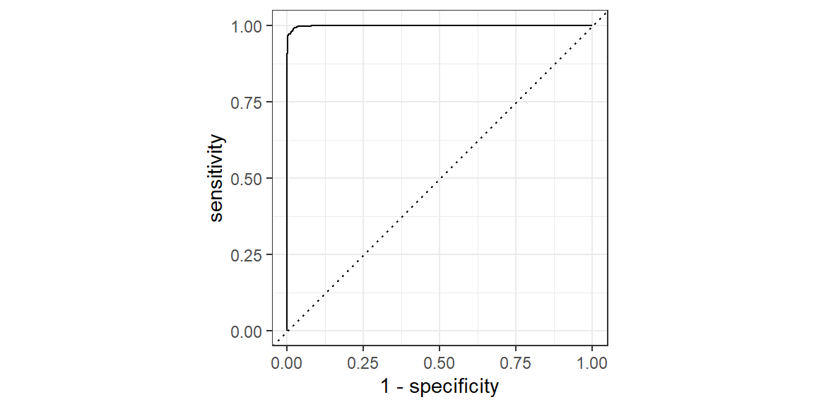
preds |> roc_auc(truth = result, .pred_W)# A tibble: 1 × 3
.metric .estimator .estimate
<chr> <chr> <dbl>
1 roc_auc binary 0.99910.3.3 Evaluating the Random Forest Model
We assess the performance of our random forest on the testing data using measures of accuracy, confusion matrix, and ROC-AUC:
probs_test = rf_fit |> predict(test_data, type="prob")
preds_test = rf_fit |> predict(test_data) |>
bind_cols(probs_test, test_data)
accuracy(preds_test, truth = result, estimate=.pred_class)# A tibble: 1 × 3
.metric .estimator .estimate
<chr> <chr> <dbl>
1 accuracy binary 0.810conf_mat(preds_test, truth = result, estimate=.pred_class) Truth
Prediction W L
W 203 40
L 60 223preds_test |>
roc_curve(truth = result, .pred_W) |>
autoplot()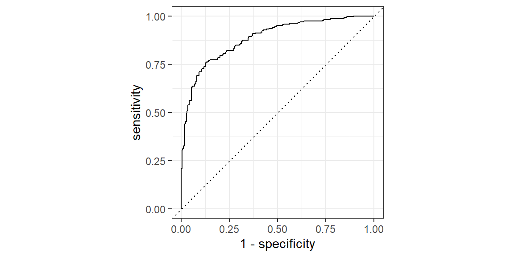
preds_test |> roc_auc(truth = result, .pred_W)# A tibble: 1 × 3
.metric .estimator .estimate
<chr> <chr> <dbl>
1 roc_auc binary 0.885This random forest model is clearly overfit. We will need to fine tune the model as we did with a single decision tree.
10.3.4 Hyperparameter tuning
Random forests have several tunable hyperparameters, including:
-
mtry: Number of randomly selected predictors at each split. -
min_n: Minimum number of data points required to split a node. -
trees: Number of decision trees grown.
rf_spec <- rand_forest(trees = 500, mtry=tune(),
min_n=tune()) |>
set_mode("classification") |>
set_engine("ranger")
#setup tuning grid
tuning_grid = grid_regular(
mtry(range=c(1,15)),
min_n(range=c(2, 30)),
levels = 5
)
#setup cross validation
dat_folds = vfold_cv(train_data, v = 5, strata = result)
#tune the model
rf_results = tune_grid(
rf_spec,
result~.,
resamples = dat_folds,
grid = tuning_grid,
metrics = metric_set(accuracy)
)
best_params <- select_best(rf_results, metric="accuracy")
best_params# A tibble: 1 × 3
mtry min_n .config
<int> <int> <chr>
1 11 30 Preprocessor1_Model24rf_spec <- rand_forest(trees = 500, mtry=best_params$mtry,
min_n=best_params$min_n) |>
set_mode("classification") |>
set_engine("ranger")
rf_fit <- rf_spec |>
fit(result ~ ., data = train_data)
probs = rf_fit |> predict(train_data, type="prob")
preds = rf_fit |> predict(train_data) |>
bind_cols(probs, train_data)
accuracy(preds, truth = result, estimate=.pred_class)# A tibble: 1 × 3
.metric .estimator .estimate
<chr> <chr> <dbl>
1 accuracy binary 0.940preds |> roc_auc(truth = result, .pred_W)# A tibble: 1 × 3
.metric .estimator .estimate
<chr> <chr> <dbl>
1 roc_auc binary 0.988probs_test = rf_fit |> predict(test_data, type="prob")
preds_test = rf_fit |> predict(test_data) |>
bind_cols(probs_test, test_data)
accuracy(preds_test, truth = result, estimate=.pred_class)# A tibble: 1 × 3
.metric .estimator .estimate
<chr> <chr> <dbl>
1 accuracy binary 0.797preds_test |> roc_auc(truth = result, .pred_W)# A tibble: 1 × 3
.metric .estimator .estimate
<chr> <chr> <dbl>
1 roc_auc binary 0.881Although there is improvement, we still have overfitting.
10.3.5 Variable Importance
A powerful advantage of random forests is the built-in measure of variable importance. This measure identifies the predictors that contribute most significantly to the model’s predictive power, thus providing valuable insights to sports analysts.
library(vip)
rf_spec <- rand_forest(trees = 500, mtry=best_params$mtry,
min_n=best_params$min_n) |>
set_mode("classification") |>
set_engine("ranger", importance="impurity")
rf_fit <- rf_spec |>
fit(result ~ ., data = train_data)
vip(rf_fit$fit, num_features = 15) +
labs(title = "Variable Importance from Random Forest",
subtitle = "NBA Game Outcome Prediction")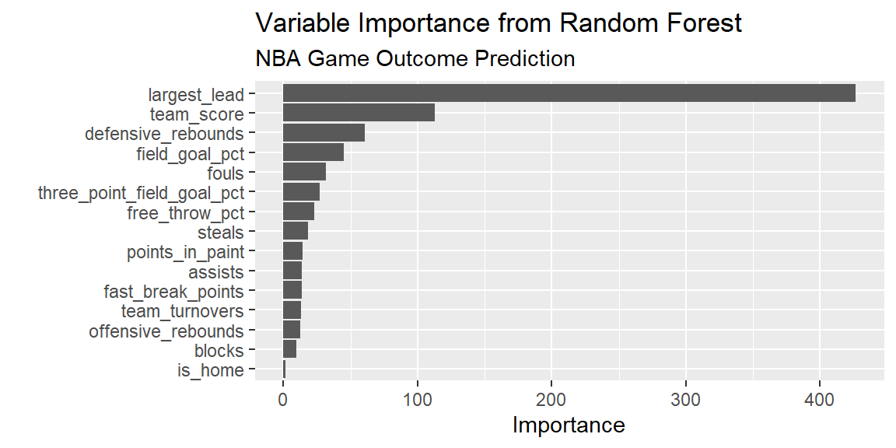
The resulting plot ranks predictors by their relative importance, guiding analysts toward factors most influential in determining game outcomes, such as team score, largest lead, field goal percentage, or whether the team was playing at home.
10.3.6 Summary
Random forests enhance the predictive capabilities of decision trees through ensemble learning and random feature selection. Their accuracy, robustness, interpretability through variable importance measures, and ease of tuning make them indispensable tools in modern sports analytics.